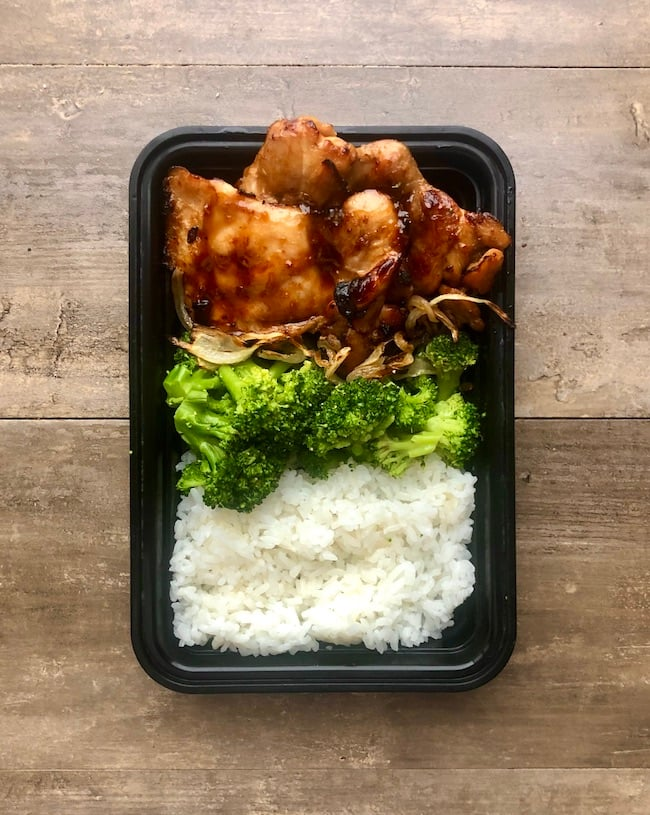

Honey garlic chicken

Description:
This Honey Garlic Chicken dish is the meal prep version of the Honey Garlic Chicken Lettuce Wraps.
Each dish is filled with rice, chicken, broccoli, and caramelized onions
Ingredients:
- 2½ lbs (1135 g) boneless skinless chicken thighs
- 1½ tbsp (30 g) oyster sauce
- 2½ tbsp (50 g) honey
- 1⅓ tbsp (20 g) soy sauce
- 2 cloves (10 g) minced garlic
- 1 tsp (5 g) sesame oil
- 1 tsp (5 g) sriracha
- 1 medium (200 g) sweet onion
- 3¾ cups (563 g) cooked rice
- 1 lb (454 g) frozen broccoli
- salt and pepper to taste
Instructions:
For the rice:
- Cook enough rice to yield 3¾ cups of cooked rice. 1 cup of dry rice will make around 2-3 cups of cooked rice depending on what kind you use.
For the chicken:
- In a large bowl add the oyster sauce, honey, soy sauce, sesame oil, sriracha, and garlic. Stir to incorporate. Add in the chicken and toss to coat. Place in the fridge and allow to marinate for at least 30 minutes.
- If you don't have an air fryer, preheat your oven to 425°F.
- Cut the onion into thin slices.
- Place the chicken on a sheet pan and bake for 10-12 minutes.
- Remove the pan from the oven and turn the oven to broil. Add the onions in the spaces around the chicken. If the chicken has released a lot of water it may be helpful to drain some of it off the pan.
- Place the sheet pan on the top rack and watch it carefully so it doesn't burn. The goal is to brown the chicken and develop color. It will take 5-10 minutes. If there is too much liquid on the pan it can prevent browning.
- Stir the onions around after a few minutes. You may need to remove the chicken and continue cooking the onions until they are caramelized.
For the broccoli:
- Cook the broccoli according to the packaging or steam if if using fresh.
- Season with salt and pepper.
Plating:
- To each dish, divide the chicken, broccoli, and rice evenly then add ¾ cup of rice. This recipe makes 5 servings.
Nutrition:
Calories: 461kcal | Carbohydrates: 50g | Protein: 43g | Fat: 10g